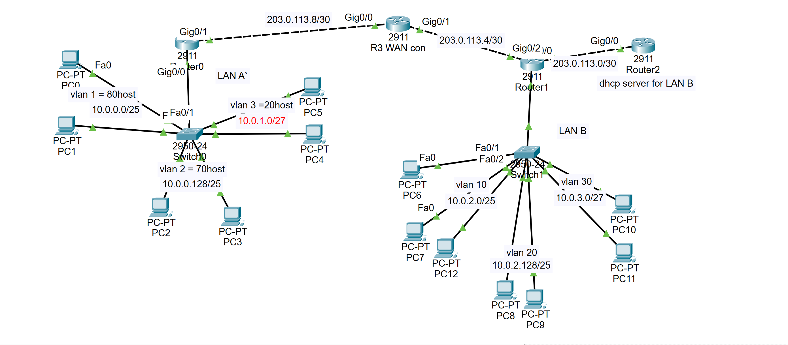

🖧
LAN
Add topology screenshot
LAN Network
A dual-site LAN with multi-VLAN segmentation, router-on-a-stick inter-VLAN routing, centralized DHCP with relay agents, and OSPF tying both sites together. Includes subnetting across a 10.0.0.0/8 address space.
OSPF Implementation
VLAN Segmentation
DHCP Relay
Subnetting Logic
Router-on-a-Stick
Static Routes
Explore LAN Build →